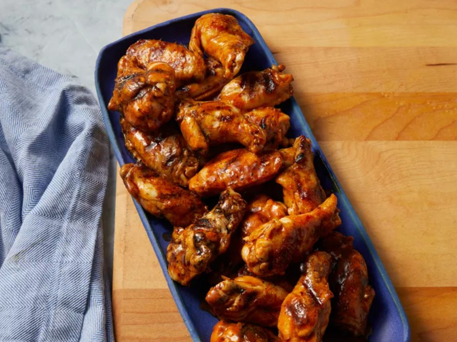

Home
Grill Master Chicken Wings

Description
These grilled chicken wings are always a hit! I grill them up before a party and keep them hot in a low oven. I always use Frank's RedHot sauce. It's got lots of flavor and isn't too spicy.
- Prep Time: 10 mins
- Cook Time: 20 mins
- Total Time: 30 mins
- Servings: 10
Ingredients
Wings
- 3 pounds chicken wings, cut apart at joints, wing tips discarded
- ½ cup soy sauce
- ½ cup Italian-style salad dressing
Spicy Sauce
- ¼ cup butter
- ¼ cup hot pepper sauce
- 1 teaspoon soy sauce
Steps
- To prepare the wings: Combine chicken wings, soy sauce, and Italian dressing in a large resealable plastic bag; coat chicken wings with marinade, squeeze out excess air, and seal the bag. Marinate in the refrigerator, 4 hours to overnight.
- Preheat an outdoor grill for medium-high heat and lightly oil the grate.
- To make the spicy sauce: Melt butter in a small saucepan over low heat; stir in hot pepper sauce and soy sauce until combined. Remove from heat and set aside.
- Remove chicken wings from marinade and pat dry; discard any remaining marinade.
- Cook on the preheated grill, turning occasionally, until chicken is golden brown and no longer pink inside, 25 to 30 minutes. An instant-read thermometer inserted near the bone should read 165 degrees F (74 degrees C).
- Place grilled wings in a large bowl. Pour prepared spicy butter sauce over wings; toss until well-coated.